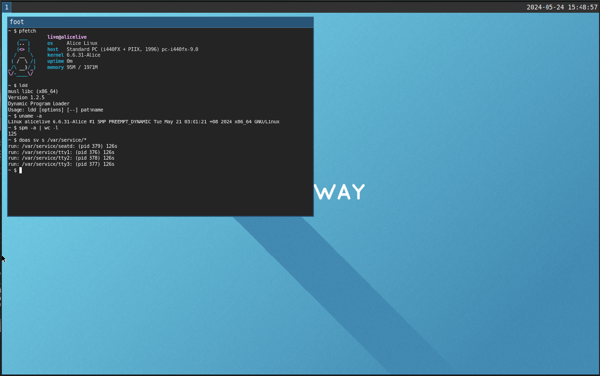

home
home /
docs /
development /
download /
iso /
community /
donate

Alice Linux is my personal daily driver minimal distro that used musl libc, busybox as main core utilities, package manager written in POSIX shell script, Wayland and/or Xorg as the gui server and trying to be minimal, lightweight and usable as possible.
- no systemd
- no PAM
- no polkit
- musl instead of glibc
- busybox instead of coreutils/util-linux/etc
- busybox's runit instead of systemd/openrc/etc
- libudev-zero instead of udev/eudev
- gettext-tiny instead of gettext
- mandoc instead of man-db
- doas instead of sudo
Copyright (C) Alice Linux, 2024